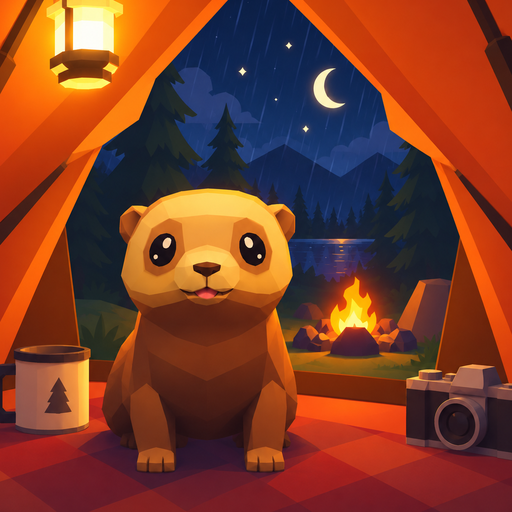

Cozy TentCozy Tent · Jopam Studio · actualizada el 16 de septiembre de 2026
Esta política es del juego Cozy Tent. Al final hay una nota aparte sobre esta página web.
Cozy Tent no recoge datos personales. No hay cuentas, ni registro, ni anuncios, ni seguimiento de lo que haces dentro del juego.
El juego puede pedirte acceso a tus fotos o archivos cuando tú pulsas para importar una imagen o guardar una foto. Si no lo usas, no hace falta darlo.
El juego funciona sin conexión. Solo la usa para descargar libros de la biblioteca opcional, cuando tú lo pides. Esa descarga se hace desde GitHub Pages, que registra peticiones como cualquier página web.
Según la plataforma donde juegues, algunas funciones las gestionan las tiendas, con sus propias políticas:
El juego es apto para todas las edades y no recoge datos de nadie, tampoco de los niños. No hay anuncios, ni cuentas, ni chat, ni seguimiento de ningún tipo, y nada de lo que se hace dentro sale del dispositivo.
Como todo se guarda en tu dispositivo, basta con borrar la partida desde los ajustes del juego o desinstalarlo. No hay nada que pedirnos borrar, porque no tenemos nada tuyo.
Si el juego cambia y empieza a tratar datos de otra forma, esta página se actualizará y cambiará la fecha de arriba.
El tráiler de la página está alojado en la misma web: no se carga contenido de terceros.
La web está publicada con GitHub Pages, que registra las peticiones como cualquier servidor.
Cozy Tent · Jopam Studio · updated 16 September 2026
This policy covers the Cozy Tent game. There is a separate note about this website at the end.
Cozy Tent does not collect personal data. There are no accounts, no sign up, no ads and no tracking of what you do in the game.
The game may ask for access to your photos or files when you tap to import an image or save a photo. If you don't use those features, you don't need to grant it.
The game works offline. It only goes online to download books from the optional library, when you ask it to. That download comes from GitHub Pages, which logs requests like any website.
Depending on where you play, some features are handled by the store, under their own policies:
The game is suitable for all ages and collects no data from anyone, children included. There are no ads, no accounts, no chat and no tracking of any kind, and nothing you do inside leaves your device.
Since everything is kept on your device, clearing your progress in the game's settings or uninstalling it is enough. There is nothing to ask us to delete, because we hold nothing of yours.
If the game changes how it handles data, this page will be updated and the date above will change.
The trailer on the site is hosted on the site itself: no third-party content is loaded.
The site is published with GitHub Pages, which logs requests like any web server.